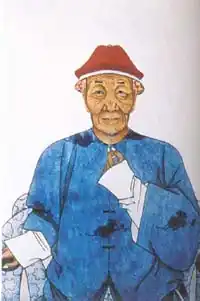

Видатний китайський новеліст, що писав під псевдонімом Ляо Чжай, народився в 1640 році, помер в 1715 році в провінції Шаньдун.
Він жив на рубежі правління двох династій — китайської Мінської династії і маньчжурської Цінської.
Біографічні дані про письменника вкрай мізерні, проте його образ і події його життя знайшли відображення в його творах. В силу цього виникає необхідність розглянути біографічну основу творчості письменника, визначити ті життєві чинники, які сприяли формуванню його творчих здібностей. Пу Сунлін виповнилося всього чотири роки, коли влада в країні захопили маньчжури. Батько письменника належав до дуже древнього роду, який, однак, оскільки він розглядався періоду втратило колишню велич. Життєве благополуччя в Китаї було пов'язано з успішним проходженням екзаменаційних випробувань, які давали право обіймати певні чиновницькі посади і ставали основою подальшої кар'єри. Прапрадід письменника був студентом-стипендіатом, син його домігся лише першого звання, котрий не давав прав на стипендію, дід же Пу Сунліна не мав ніякої ступеня. Пу Пань, батько письменника, як і його предки, наполегливо вивчав канонічні книги, сподіваючись витримати іспити і отримати можливість просуватися по чиновницької сходах, але успіхів на цьому терені він так і не домігся. Сім'я тим часом збільшувалася, необхідно було думати про підтримку хоча б мінімального її благополуччя. Матеріальна скрута змусили главу сімейства зайнятися незвичайним для освіченої людини справою — торгівлею. Це поліпшило матеріальне становище сім'ї: нажив певний капітал, Пу Пань купив землю і споруди. Пу Пань сам займався навчанням синів: містити домашнього вчителя було не під силу, хоча цього вимагали традиції і звичаї освіченого стану. Навчання дітей полягала в освоєнні ними древніх канонічних книг і класичної поезії — того, що вважалося необхідним для здачі державних іспитів. Сунлін, молодший і який виявився здатним з братів, займався з великою охотою і швидко опановував знаннями, проявляючи незвичайну завзятість. Плекаючи мрію вивести сина на чиновницьку стезю і розуміючи, що для цього необхідні не тільки знання, а й зв'язку, Пу Пань посватав Сунлін дочка одного з найбільш освічених людей округи. Весілля відбулося в 1675 році, коли нареченому виповнилося сімнадцять років. Під час поділу майна Пу Сунлін (тому, що він був безкорисливий, або ж, як молодший в сім'ї, по догматам конфуціанської моралі, був зобов'язаний поступитися старшим, а швидше за все — з тієї та іншої причин) дісталися невеличкий клаптик землі та старий, запущений хлів розміром в три курячі кліті, всередині якого бурхливо розрісся дикий чагарник. Брати ж отримали будинок з прибудовами і службами. Важкі умови життя не завадили щастя сім'ї: чоловік і дружина довгі роки прожили в любові та злагоді. З великою теплотою і повагою говорить письменник про свою дружину в вірші "Ти була вірною подругою". Все життя він готувався складати державні випробування, але не маючи ні кошти, ні протекції, зміг витримати лише одне випробування і то тільки в 1711 році, в 71 рік отримавши першу сходинку. Без наукового ступеня Пу Сунлін не міг отримати посади чиновника та всіх пов'язаних з нею привілеїв. Тому він все життя терпів нестатки, протягом цілого ряду років працював простим секретарем-переписувачем, заробляв приватними уроками. У вільний час він займався художньою творчістю і славився серед своїх сучасників тонким літературним стилем, який поєднувався з моральним напрямом. В 1670 Пу Сунлін, вже відомий своєю ерудицією, начитаністю і знаннями, хоча все ще не має наукового звання, отримує від земляка Сунь Хуея, призначеного на посаду начальника повіту Баоін в провінції Цзянсу, пропозиція зайняти місце письмоводителя. У Баоін Пу Сунлін був правою рукою начальника: вів його офіційну та особисту переписку, писав доповіді до вищих інстанцій, віддавав розпорядження підлеглим, становив проекти рішень самого різного характеру, тобто займався всіма або майже всіма справами начальника. Протягом 1670-1672 років Пу Сунлін плідно працював над віршами з циклу "Подорож на південь" і новелами. Їх сюжети були навіяні подіями, свідком яких він став під час служби в повітовому правлінні. Тут розкрилася перед письменником закулісне життя феодального суспільства, тут він збагатив свій досвід знанням психології судді і підсудного, позивача і відповідача, наклепника, злодія, шантажиста і інших. Перед художником пройшли і прості, гуманні, працьовиті люди, готові за правду на позбавлення і навіть тортури. У роки, коли почав писати Пу Сунлін, обстановка в країні мало сприяла творчості. Була встановлена найжорстокіша цензура, яка утрудняє публікацію творів, проведена перевірка всіх вийшли в країні книг, частина з яких піддалася переробці, частина — забороні. Відслуживши в Баоін, Пу Сунлін повернувся в рідні місця, де прийняв пропозицію багатого сановника у відставці працювати у нього в якості домашнього вчителя, оскільки матеріальне становище сім'ї письменника залишалося важким. В цей же час Пу Сунлін пише вірші, згодом склали збірку "Вірші Ляо Чжая", створює так звані "подячні доповіді" імператору, написані від імені "всіх міністрів", "всіх чиновників", також продовжує працювати над новелами. На їх створення і редагування пішло близько десяти років (1670 —1679). Згодом автор не раз повертався до збірки своїх новел: поповнював його новими розповідями, деталями, вносив зміни в уже написане. Так, "Лисий сон" був написаний в 1682 році, "Дух квітів" і "Верховний святий" — в 1683, "Повінь" — в 1695, "Сніг у розпалі літа" — після 1700 року, але переважна більшість новел створено за десятиліття з 1670 по 1680 роки, коли письменник перебував у розквіті творчих і життєвих сил. При цьому злидні як і раніше не залишає родину Пу Сунліна. Він продовжує вчителювати в будинку Бі Цзіюй (того самого сановника у відставці) до 1710 року. У 1713 році помирає його дружина, смерть якої він важко переживає. Важке життя, недуги, старість підірвали здоров'я письменника. Пу Сунлін занедужав і, проболев короткий час, в 1715 році помер. Поховали його поряд з будинком, в одній могилі з дружиною. Зараз по Пу Сунлін знімають фільми і телесеріали.